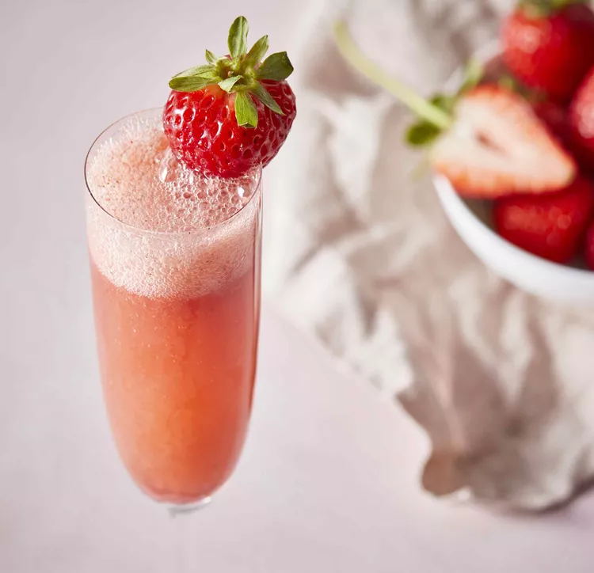

Strawberry Bellini Recipe

Description
A Strawberry Bellini is a light and refreshing cocktail made with sparkling wine (usually Prosecco) and strawberry
puree.
It's a popular brunch drink and is perfect for springtime or summer.
Ingredients
- 3 cups strawberries, hulled and sliced
- 1 tablespoon brandy
- ¼ cup confectioners' sugar
- 3 large whole strawberries
- 1 ½ cups chilled sparkling wine
Steps
- Blend hulled strawberries, confectioners' sugar, and brandy in a blender until smooth,
Chill in the refrigerator for 10 minutes.
- Divide the strawberry mixture among three champagne flutes. Pour 1/2 cup sparkling wine into each flute and stir to combine. Garnish each glass with a whole strawberry.